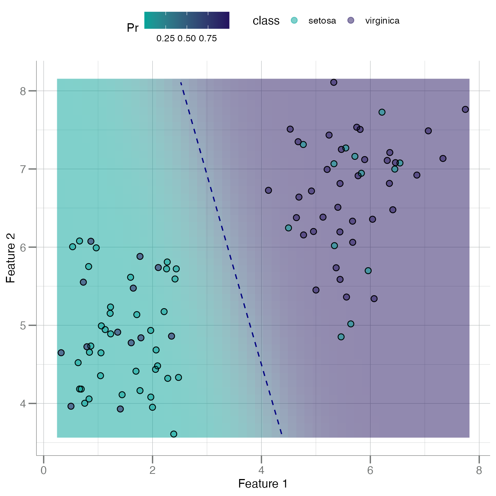
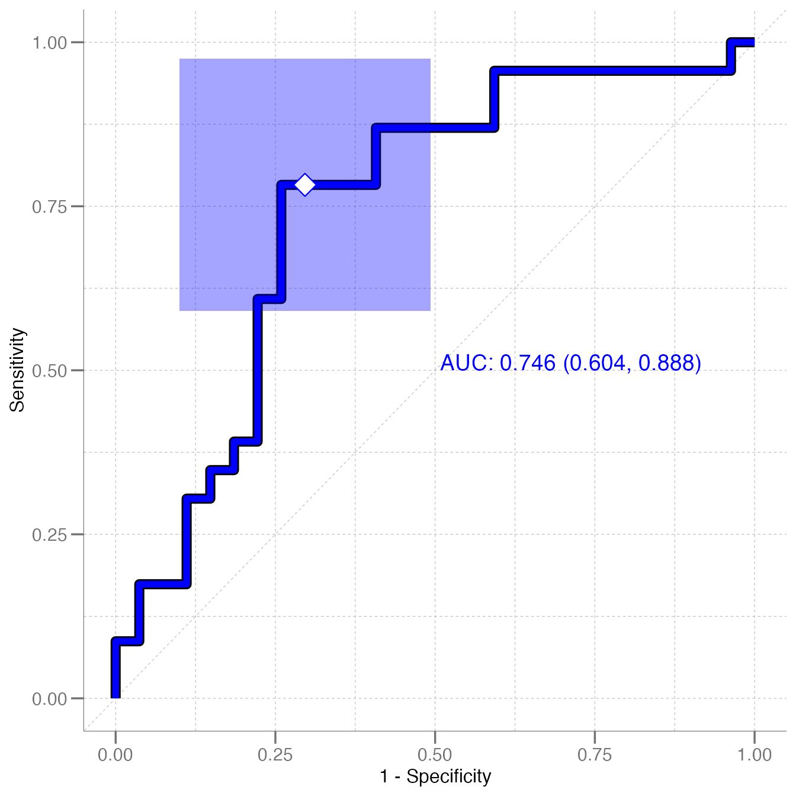
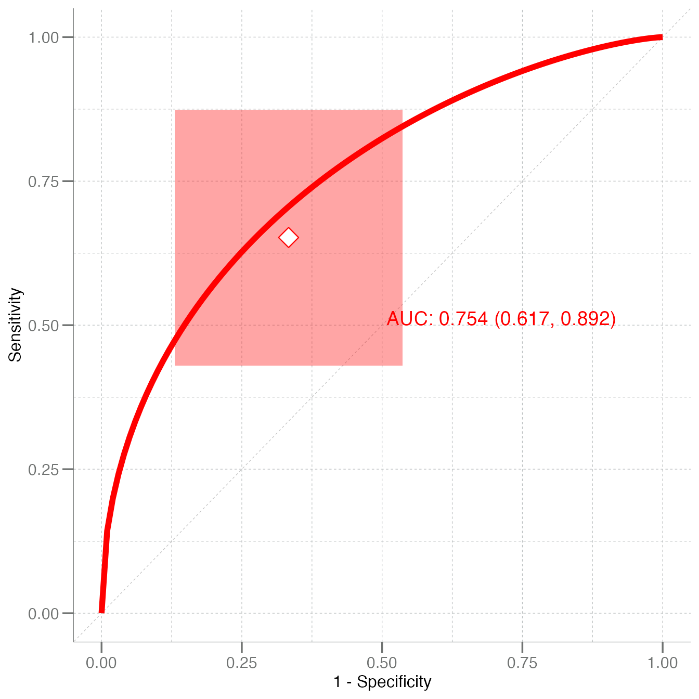

Introduction to libml
libml.RmdThe libml package contains general functions necessary
for the analysis of biomarker data via statistical and machine learning
techniques, calculating KS distances, k-fold cross-validation,
classification performance metrics, and ROC plotting.
Introduction
The libml package provides functions to create training
datasets, perform univariate tests (via the
calc_univariate(), train classifiers, and plot ROC curves.
The models types supported in this package are primarily geared
toward:
- Naive Bayes
- Random forest
- Logistic regression
There is also limited support for k-nearest neighbors
models. With the exception of “robust” Naive Bayes, these models are
created using the associated R packages directly. The libml
package provides wrappers for performing cross validation, making
predictions, and creating ROC curves.
This package is biased toward binary classification and as a
result many of the functions assume only two classes exist. To keep
track of which class is the positive class, a tibble called
a tr_data object is defined for use in this package. The
“Response” column is a factor class, ordered so that the
positive class is the second label. These
tr_data data frames can be created using the
create_train() function.
ROC curves and other related functions all on a standard input consisting of:
- truth: a vector of actual class labels
-
predicted: a numeric vector (in the same
order as
truth) of class predictions
Functionality
Training Data
Training data objects created using create_train() from
an data.frame object. The create_train()
function can subset the data based on the i information passed in the
... (passed to dplyr::filter() and are labeled
by the group_var = argument. A “Response” column to the end
of the data frame corresponding to the classes. The negative and
positive classes are the grouped according to this column and a
dplyr::group_by() call, creating a “grouped tibble” object.
For example: consider the simple case where groupings are defined by a
single meta data field called Species:
add_noise <- function(x) x + rnorm(length(x), sd = 3)
tr <- tr_iris
class(tr)
#> [1] "tr_data" "tbl_df" "tbl" "data.frame"As is typical with dplyr::filter(), multiple conditions
can be added as desired:
tr2 <- create_train(iris, Species == "setosa", Sepal.Length > 5,
group_var = Species)Model Fitting
Splitting Train vs Test Sets
A very convenient method to split a data set into training and test sets is:
# Add a sample identifier variable for the anti_join()
tr <- dplyr::mutate(tr, id = dplyr::row_number())
train <- tr |>
dplyr::sample_frac(size = 0.5) # random selection of rows @ 50%
test <- tr |>
dplyr::anti_join(train, by = "id") |> # use anti_join to get the sample setdiff
dplyr::select(-id) # remove identifier
train <- dplyr::select(train, -id) # remove identifierRobust Naive Bayes
This function fits a naive Bayes model using robustly
calculated parameters, i.e. calculated using a least-squares fit to a
Gaussian cumulative distribution function rather than simply
stats::mean() and stats::sd(). This engine
comes from globalr::fit_gauss(), with starting parameter
values calculated via stats::median() and
stats::mad() passed to stats::nls().
nb <- fit_nb(Species ~ ., data = train)
nb
#>
#> Robust Naive Bayes Classifier for Discrete Predictors
#>
#> Call:
#> fit_nb.formula(formula = Species ~ ., data = train)
#>
#> A-priori probabilities:
#> Species
#> setosa virginica
#> 0.46 0.54
#>
#> Conditional densities:
#> # A tibble: 4 × 5
#> parameter Sepal.Length Sepal.Width Petal.Length Petal.Width
#> <chr> <dbl> <dbl> <dbl> <dbl>
#> 1 setosa_mu 5.37 3.53 1.87 0.523
#> 2 virginica_mu 6.28 3.11 4.55 1.57
#> 3 setosa_sigma 0.979 0.682 1.14 0.872
#> 4 virginica_sigma 0.844 0.508 2.51 1.21Plotting a Bivariate Naive Bayes Boundary
If you would like to see how a naive Bayes boundary looks in 2 dimensions:
data.frame(F1 = tr$Petal.Length,
F2 = tr$Sepal.Length,
class = tr$Species) |>
plot_bayes_boundary(pos_class = "virginica")
Random Forest
Random forest models are often used in proteomic analyses, and there
are numerous functional tools to investigate and interrogate these
models, e.g. get_gini():
rf <- randomForest(Species ~ ., data = train)
get_gini(rf)
#> # A tibble: 4 × 2
#> Feature Gini_Importance
#> <chr> <dbl>
#> 1 Sepal.Length 7.51
#> 2 Petal.Length 5.73
#> 3 Petal.Width 5.69
#> 4 Sepal.Width 5.44Model Performance
As one might expect, there are numerous functions for evaluating
model performance in libml.
Many S3 methods are provided to the S3 generic
globalr::calc_predictions,
e.g. calc_predictions.glm(). The following are a few of the
standard metrics:
Confusion Matrix
pred_nb <- calc_predictions(nb, test)
pred_nb
#> # A tibble: 50 × 3
#> pred_class prob_setosa prob_virginica
#> <chr> <dbl> <dbl>
#> 1 virginica 0.00279 0.997
#> 2 virginica 0.000252 1.000
#> 3 virginica 0.000678 0.999
#> 4 setosa 0.881 0.119
#> 5 virginica 0.0000108 1.000
#> 6 virginica 0.00365 0.996
#> 7 setosa 0.944 0.0558
#> 8 virginica 0.000295 1.000
#> 9 setosa 0.984 0.0162
#> 10 setosa 0.977 0.0233
#> # ℹ 40 more rows
calc_confusion(test$Species, pred_nb$prob_virginica,
pos_class = "virginica", cutoff = 0.5)
#> ── Confusion ───────────────────────────────────────────────────────────────────────────────────────
#>
#> Positive Class: virginica
#>
#> Predicted
#> Truth setosa virginica
#> setosa 19 8
#> virginica 5 18
pred_rf <- calc_predictions(rf, test)
pred_rf
#> # A tibble: 50 × 3
#> pred_class prob_setosa prob_virginica
#> <chr> <dbl> <dbl>
#> 1 virginica 0.006 0.994
#> 2 virginica 0.348 0.652
#> 3 virginica 0.034 0.966
#> 4 setosa 0.606 0.394
#> 5 setosa 0.59 0.41
#> 6 virginica 0.194 0.806
#> 7 setosa 0.586 0.414
#> 8 setosa 0.574 0.426
#> 9 setosa 0.578 0.422
#> 10 setosa 0.802 0.198
#> # ℹ 40 more rows
calc_confusion(test$Species, pred_rf$prob_virginica,
pos_class = "virginica", cutoff = 0.5)
#> ── Confusion ───────────────────────────────────────────────────────────────────────────────────────
#>
#> Positive Class: virginica
#>
#> Predicted
#> Truth setosa virginica
#> setosa 18 9
#> virginica 8 15Performance Stats
Typical performance statistics can then be generated by calling the
S3 summary() generic for the confusion.matrix
class:
calc_confusion(test$Species, pred_rf$prob_virginica,
pos_class = "virginica", cutoff = 0.5) |> summary()
#> ══ Confusion Matrix Summary ════════════════════════════════════════════════════════════════════════
#> ── Confusion ───────────────────────────────────────────────────────────────────────────────────────
#>
#> Positive Class: virginica
#>
#> Predicted
#> Truth setosa virginica
#> setosa 18 9
#> virginica 8 15
#> ── Performance Metrics (CI95%) ─────────────────────────────────────────────────────────────────────
#>
#> # A tibble: 10 × 5
#> metric n estimate CI95_lower CI95_upper
#> <chr> <int> <dbl> <dbl> <dbl>
#> 1 Sensitivity 23 0.652 0.430 0.874
#> 2 Specificity 27 0.667 0.464 0.870
#> 3 PPV (Precision) 24 0.625 0.404 0.846
#> 4 NPV 26 0.692 0.490 0.895
#> 5 Accuracy 50 0.66 0.510 0.810
#> 6 Bal Accuracy 50 0.659 0.510 0.809
#> 7 Prevalence 50 0.46 0.302 0.618
#> 8 AUC 50 0.754 0.618 0.891
#> 9 Brier Score 50 0.206 0.0779 0.334
#> 10 MCC NA 0.318 NA NA
#> ── Additional Statistics ───────────────────────────────────────────────────────────────────────────
#>
#> F_measure G_mean Wt_Acc
#> 0.638 0.659 0.656ROC
The primary function for creating ROC curves is called
plot_emp_roc(), or plot empirical ROC curve. It can be
called by providing both the truth = and
predicted = argument vectors, as well as a
cutoff for delineating the class labels (i.e. operating
point default = 0.5).
There is a confidence interval box drawn around the operating point
that can be turned off using the boxes = argument.
The plot_emp_roc() function has support for adding
multiple ROC curves to one plot using the add = argument.
When this argument is set to FALSE (or 0) a new plot is
created; however, when add = TRUE (or 1) a second ROC curve
is added and its corresponding AUC value is placed beneath the AUC for
the first ROC curve.
When adding a multiple ROC curves, set add = to integers
> 1 and each successive AUC value will be placed below
the previous. The position and spacing of these AUC label can be
adjusted using the auc_shift = argument.
A smoothed curve fit to the empirical ROC can be added using
plot_fit = TRUE.
plot_emp_roc(test$Species, pred_nb$prob_virginica, pos_class = "virginica",
col = "blue")
#> Warning: Using `size` aesthetic for lines was deprecated in ggplot2 3.4.0.
#> ℹ Please use `linewidth` instead.
#> ℹ The deprecated feature was likely used in the libml package.
#> Please report the issue to the authors.
#> This warning is displayed once per session.
#> Call `lifecycle::last_lifecycle_warnings()` to see where this warning was generated.
#> Warning: The `size` argument of `element_line()` is deprecated as of ggplot2 3.4.0.
#> ℹ Please use the `linewidth` argument instead.
#> ℹ The deprecated feature was likely used in the libml package.
#> Please report the issue to the authors.
#> This warning is displayed once per session.
#> Call `lifecycle::last_lifecycle_warnings()` to see where this warning was generated.
plot_emp_roc(test$Species, pred_rf$prob_virginica, pos_class = "virginica",
col = "red", plot_fit = TRUE)